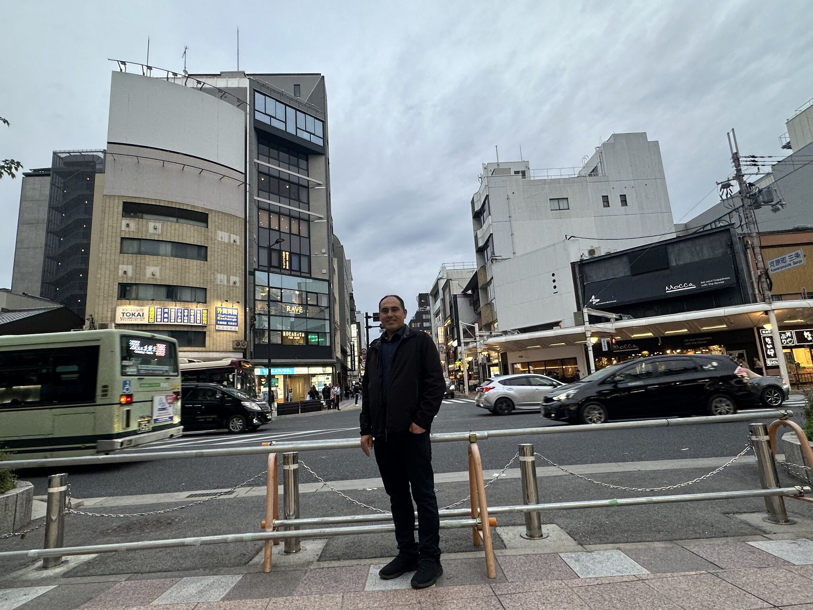
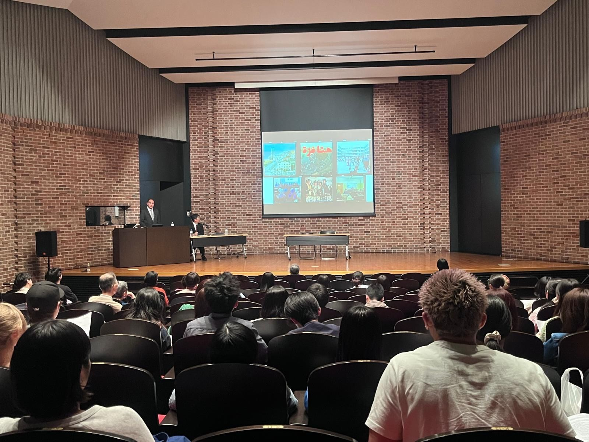

Research & Public Dialogue
University of Cambridge Delegation Visit to Japan Strengthens International Research and Academic Collaboration
Dr. Wesam Amer joined a University of Cambridge delegation visiting Japan, where he presented research at leading Japanese universities and engaged with scholars across the country. The visit advanced international academic dialogue on war communication, media, artificial intelligence, and higher education, while opening new opportunities for collaboration between the UK, Japan, Palestine, and beyond.
Dr. Wesam Amer recently participated in an academic delegation from the University of Cambridge to Japan, undertaking a series of research engagements and scholarly exchanges in Tokyo, Kyoto, Fukuoka, and Hiroshima. The visit provided an opportunity to strengthen international academic networks and explore potential collaborations with Japanese institutions and researchers.
During the visit, Dr. Amer delivered presentations at Waseda University, Kyoto University, and Seinan Gakuin University, where he shared insights from his ongoing research on communication in times of war. His work examines the evolving role of media, social media platforms, and artificial intelligence in shaping public perceptions, political legitimacy, and strategic narratives across conflict environments in the Middle East.
The presentations addressed a range of contemporary issues, including the impact of AI-generated propaganda, the influence of media narratives during conflict, and the role of digital communication in political mobilisation. Dr. Amer also discussed his research on Western media representations of the Middle East, Islamist digital communication strategies, and the concept of "scholasticide"—the systematic targeting of educational institutions and knowledge systems in conflict zones, including Gaza.
Beyond the formal presentations, the visit facilitated extensive dialogue with Japanese academics and researchers from diverse disciplines. These exchanges explored opportunities for future cooperation in research, academic exchange programmes, and international grant initiatives, reinforcing the value of cross-border scholarly partnerships.
A particularly significant component of the visit was a tour of the Hiroshima Peace Memorial Museum, where discussions reflected on the enduring consequences of war and the importance of preserving historical memory. The experience offered a powerful context for ongoing conversations about conflict, education, and the protection of knowledge.
The visit concluded with a shared commitment to expanding international collaboration. By engaging with leading institutions across Japan, Dr. Amer contributed to strengthening academic connections between the United Kingdom, Japan, Palestine, and the wider global research community, while advancing scholarly discussions on communication, conflict, media, and peacebuilding.


